Sample rate converters (SRCs) are often used when working with digital audio, even when the user isn't aware of it. Almost every ADC or DAC converter, whether it is an expensive external unit or a cheap sound card, is working with so called "oversampling", performing A/D or D/A conversion at a higher sampling rate (up to a few megahertz) and lower bit depth (typically 1 bit). Such oversampling is performed in the digital domain by DSP inside of the converter. Software sample rate conversion can happen transparently for the user, inside a sampler or during mixing of audio streams at different sampling rates by the operating system, or at the user's command (i.e. converting a project from 96 kHz to 44.1 kHz during the mastering of an Audio CD.)
SRC algorithmsThe simplest SRC algorithms change sampling rate by an integer factor. When the sampling rate is reduced by N times, the Nyquist frequency (one half of the sampling rate) is also reduced by N times, reducing the bandwidth. A low-pass filter has to be used in order to prevent aliasing. It will suppress all of the frequency components above the future Nyquist frequency. After the filtering, digital samples are decimated by N times. This operation preserves the spectrum below the new Nyquist frequency.
To increase the sampling rate by M times, the signal is interpolated (interleaved) by zeroes. This preserves the spectrum below the Nyquist frequency, but creates spectral images (copies) above the Nyquist frequency. These spectral images are filtered out by a low-pass filter.
Clearly, the parameters of an SRC algorithm are defined by the properties of the low-pass filter used. Smoothness of frequency and phase response in the passband provides distortion-free transmission of the in-band signal. The stopband attenuation factor defines the degree of attenuation of signals outside of the allowable frequency limits during downsampling, or the degree of attenuation of spectral images created during upsampling. The transition band of the filter shows the filter's behavior near Nyquist frequency (e.g. 22 kHz for an audio CD). In real filters, all of these parameters are interconnected. For example, to achieve better frequency response, you need to use a filter with longer impulse response and stronger oscillations in the time domain. For resampling by a fractional ratio, as in 96 kHz to 44.1 kHz, upsampling and downsampling by integer ratios can be combined (e.g. 44100 = 96000 * M / N = 96000 * 147 / 320). Since low-pass filtering is performed after M-times upsampling, but before N-times downsampling, it is possible to combine these two filtering operations into one by setting the filter cutoff frequency to the lower of the two required cutoffs. It should be mentioned that this filter operates with the M-times upsampled signal.
Special algorithms for polyphase filtering allow us to save computations during the explicit calculations with this intermediate upsampled signal. They directly calculate the samples of the output signal as weighted sums of the nearest input samples and subsets of the filter coefficients. The number of operations for this approach becomes almost independent of M and N, and depends only on interpolation order, i.e. the number of weighted input samples.
Most SRC algorithms are using this polyphase filtering approach, using a linear-phase low-pass filter.
We have organized the testing of some of the objective parameters of SRC algorithms in the 96 kHz - 44.1 kHz conversion mode. This mode is considered "hard" because of its fractional resampling ratio. The set of test signals has been discussed among engineers from Weiss Engineering, Alexey Lukin and members of Glenn Meadows' Mastering Web-Board.
The test files were available in a variety of resolutions (32-bit int, 32-bit float, 24-bit), and the best supported resolution has been used for each of the SRC algorithms tested. The resulting graphs have been drawn by a modified version of the RightMark Audio Analyzer (RMAA) and some specially developed analysis software.
Test signals:
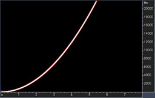 |
Sweep: Swept sine wave with -6 dbFS peak amplitude, spanning the frequency range from 0 to 48 kHz for 8 seconds. As a result, the spectrograms of converted signals can be drawn. They allow identification of non-linear distortions introduced into the signal and aliasing. The dynamic range of this spectrogram is 180dB. Before the 5 second mark, the tone is in the audible frequency range, so the level of harmonics and distortions in the left part of the spectrogram shows how signals in the audible range are distorted at different frequencies. After 5.5 seconds, the input tone goes above 22 kHz and cannot be represented in a 44.1 kHz format. So, ideally, it should be suppressed by the low-pass filter. |
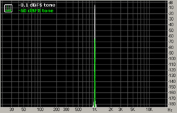 |
Tone: 1-kHz tone with peak amplitudes -0.1 and -60 dbFS. The result is a spectrum of the converted signal, showing in more detail the structure of non-linear distortions for this frequency and quantization noise for the two different signal levels.
|
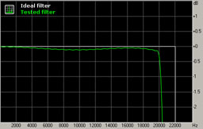 |
Passband: The test signal is a series of impulses (pulse train) which allows, in many cases, reconstruction of the impulse response of the low-pass filter and analysis of its frequency and phase response. The passband graph shows attenuation of signals in the audible range during conversion. |
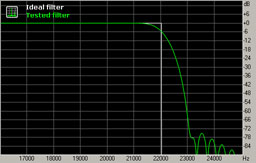 |
Transition: Also constructed from the pulse train result, the transition graph shows attenuation of signal components near the Nyquist frequency. Ideally, the filter should pass all the signals below it and suppress all the signals above it. In reality, filters can't have infinitely sharp cutoffs, so they pass some signal components above Nyquist frequency. During decimation, signals above the Nyquist frequency are reflected and aliased below it (as shown in fig. 1). If this transition band is narrow, reflected frequencies will only alias near the Nyquist frequency, which is above the audible frequency range. |
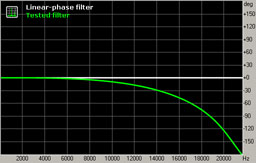 |
Phase: Also constructed from the pulse train result, the phase graph shows phase shift, in degrees, introduced by the SRC filter at different frequencies. Most SRC filters have linear phase response (the horizontal line). However, other designs exist: some filters have minimum-phase response, which is a non-linear phase, but eliminates pre-ringing in the time domain. |
So, which parameters of an SRC algorithm can be judged from these graphs? Let's use the SRC result of Sony's Vegas 7 as an example.
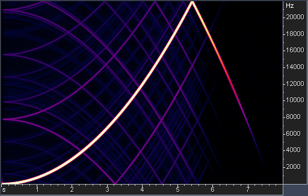
The sweep test shows that the low-pass filter has not efficiently suppressed the ultrasonic tone and it has been aliased back into the audible band.
The background of the spectrogram is almost completely black, indicating the absence of any significant quantization noise.
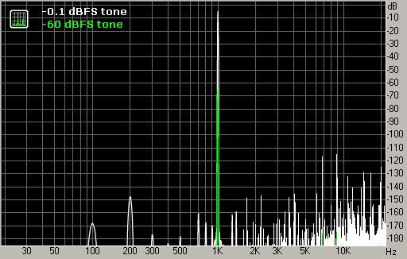
The tone test indicates that quantization noise is practically absent in this case. However non-linear distortions are present with the relative level of the spectral peaks around -110 dB (their total relative level can be around -100 dB.) This is in agreement with fig. 1 (column around 1.2 sec).
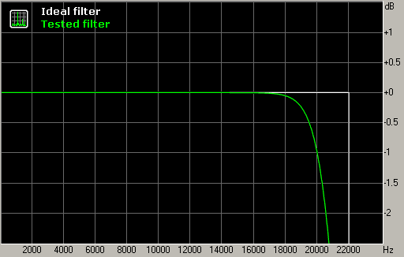
The frequency response in the passband is flat, and it starts to fall-off after 18 kHz, reaching -1 dB at 20 kHz.
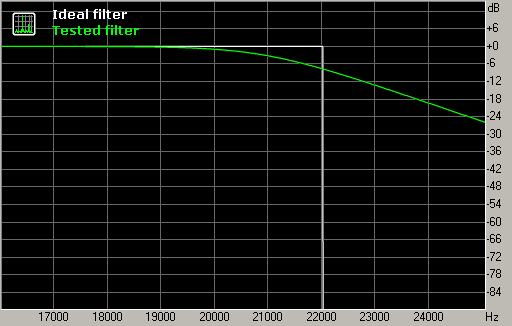
The frequency response in the transition band shows the roll-off after Nyquist frequency is very gentle, and this can lead to aliasing if the signal contains significant energy above 22 kHz (as in fig. 1). On the other hand, this gentle slope provides good filter performance in the time domain, reducing the amount of "ringing". It should be noted that the "ringing" of filters during SRC is mostly concentrated near Nyquist frequency because this range contains variations of the frequency response (here it is usually a range of 20-24 kHz). Even though it is in the ultrasonic range, there is some evidence that excessive ringing of an SRC filter negatively affects the overall sound, smearing the stereo image and reducing the clarity of bass.
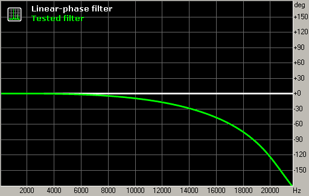
As seen in the graph, the example filter has a non-linear phase response similar to minimum-phase.
This is also visible from the impulse response graph (fig. 6, top).
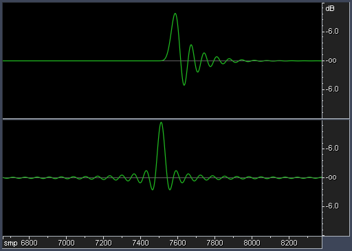
Typical SRC filters have a linear phase response (ringing is equally shared between pre- and post-ringing) and steep cutoff of frequency response (fig. 6, bottom).
An important option in SRC algorithms is the ability to adjust parameters. Most of the tested algorithms have a "quality" control that usually sets the filter steepness. Other important controls could be trimming of the filter cutoff frequency and selection of the phase response type.
Most of the tested algorithms provide reasonably good conversion quality, with the graphs showing very low distortion levels. Performance measurement almost doesn't correlate with the price of the product, in all price ranges there are good and poor-quality units. It is not always possible to judge subjective quality from the presented measurement results.